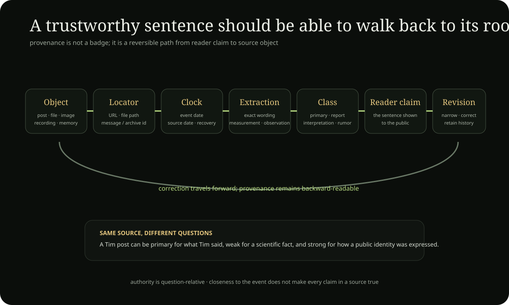

CONTEXT
& EVIDENCE
The archive has become large enough that the important question is no longer only “what else can we add?” It is also: what surrounds each claim, where did it come from, what did it mean at the time, what changed later, what does it connect to, and what kind of thing is it? This page is the reader-facing bridge into those layers.
Context changes the question before it changes the answer
The same sentence, image, bodily sensation or political claim can mean something very different depending on when it occurred, who said it, what kind of source preserves it, what had happened immediately before, what the speaker believed at the time, and what later interpretation was added afterward. Context is the archive's protection against flattening.

“I am the Potato of Life”
Identity statement or complete theology?
As a 6 October 2024 public statement, it strongly supports the existence of the identity wording at that date. Historical context shows that later Father/Axis/Ladder theology was still developing, so the sentence should not be treated as though the mature 2026 system had already been fully articulated.
Identity anchor → · History →Heart / Door
Body report, symbol or doctrine?
A chest-centered feeling can be described phenomenologically. Door can be used philosophically for transition. Cardiac anatomy belongs to Life & Body. Religious symbolism belongs to Religion. Context lets those layers interact without turning one sensation into anatomical or theological proof.
Body → · Religion → · Philosophy →North
Direction, geography, programme or revelation?
A hostile archive page
False source or useful source?
A hostile page may be weak evidence for what Tim believed, but strong evidence for how a community represented him. Context changes the source question from “is this page true?” to “what exactly is this page evidence of?”
Worked provenance → · Culture →A science resemblance
Discovery or analogy?
A project spiral may resemble a known mathematical or physical structure. Context identifies whether the resemblance is exact mathematics, formal analogy, empirical hypothesis or later archive synthesis. Without that typing, similarity can accidentally become proof.
Worked science examples → · Research Lab →Context is interpretation around evidence, not another archive directory
Use Sources when you need provenance, evidence class or authority. Use Explore when you need to find a subject by question, name or path. Stay in Context when the problem is how date, surrounding event, domain, later interpretation or reception changes what a source can responsibly mean.
The distinction matters because the same artifact can be strong evidence for one question and weak evidence for another. Context does not upgrade the source; it tells you what question the source can answer without flattening chronology or domain boundaries.
Four common ways context gets lost
Context matters most when two true-looking statements become misleading after they are merged. These examples show the kinds of collapse the archive is trying to prevent.
Later theology projected backward
Did the mature system already exist?
A 2024 Potato statement can be genuinely important without already containing the complete 2026 Father/Axis/House architecture. Later doctrine may grow from an earlier symbol; that does not turn the earlier date into evidence that the later doctrine had already been articulated.
Worked history → · Identity development →A number appears in several domains
Pattern or proof?
The number 33 can appear in Jesus-age tradition, vertebral counting conventions, project Axis language, esoteric reception and later symbolic interpretation. The recurrence is a legitimate comparative question. It is not one piece of evidence multiplied by the number of traditions in which the number can be found.
Religious comparison → · Science boundary → · inspect layered crosswalkSatire becomes quotable lore
Who actually said it?
RobotoSan, North-facing observances and other comic constructions can become memorable enough to circulate like doctrine. Provenance has to preserve whether a line was Tim's statement, assistant-generated satire, later paraphrase or audience reception before the line is used to describe Tim's beliefs.
Source authority → · Culture & reception → · inspect satire archaeologyA symbolic model resembles an empirical system
Analogy or mechanism?
Folded-world geometry, Axis language, body symbolism or Farm/Swamp models can be useful ways of organizing questions. They become misleading when resemblance is silently upgraded into physics, anatomy, criminal finding or institutional fact. The specialist domain keeps the empirical burden.
Science → · Life & Body → · World → · inspect older folded-world modelContext is successful when the reader can still separate the layers
A good synthesis does not erase the source object, the date, the evidence class, the domain or the fact that an interpretation was added later. The practical rhythm is simple: recover the object, classify what it can support, connect it to the right owner, explain the relation, and prune duplicated or misleading summaries.
That means richness is not measured by how many files surround a claim. It is measured by whether the reader can understand what happened, what the source establishes, what was inferred, what changed later, and where to inspect the underlying record.